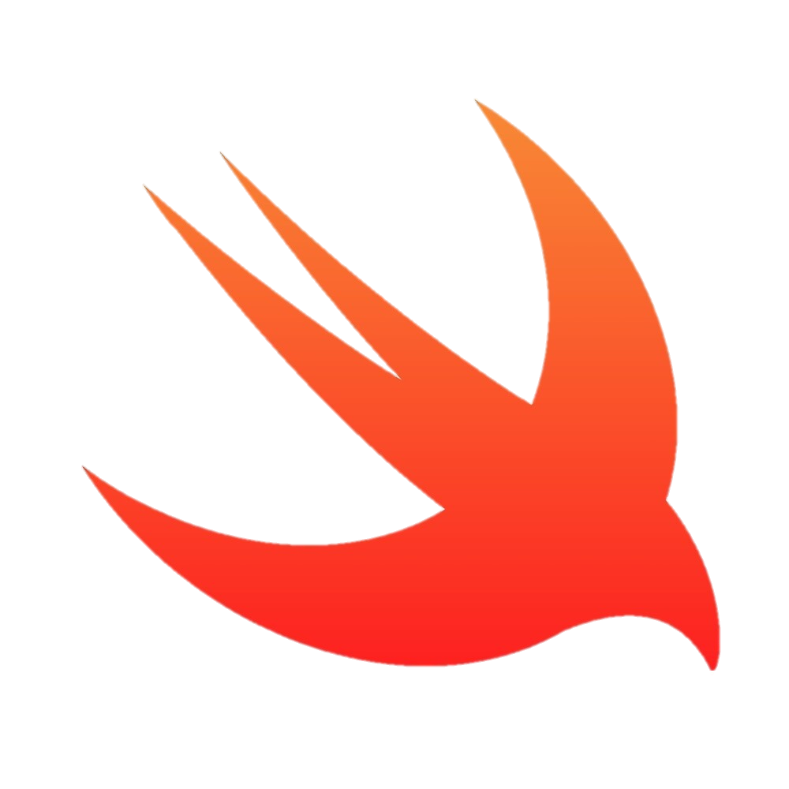

C++
Es un lenguaje de programacion de alto nivel y proposito general que se desarrollo
a partir del lenguaje C. Es utilizado en una amplia variedad de aplicaciones
Es un lenguaje de programacion de alto nivel y proposito general que se desarrollo
a partir del lenguaje C. Es utilizado en una amplia variedad de aplicaciones
Es un lenguaje de programacion orientado a objeptos utilizando en aplicaciones
empresariales, moviles y de escritorio. Fue creado en los anos 90
Un lenguaje de programacion de alto nivel y facil de aprender utilizado en inteligencia
artificial, aprendizaje automatico, ciencia de datos, entre otros.
Un lenguaje de programacion interpretado utilizado principalmente para el
desarrollar aplicaciones web interactivas y dinamicas.
Porque los programadores prefieren los trabajos nocturnos?
Porque las ideas se les ocurren en suenos.
Como se llama el lenguaje de programacion que siempre dice la verdad?
Lenguaje de progrmacion sin mentiras.
| Nombre | Simbolo | Informacion |
|---|---|---|
| PHP | HP originalmente significaba "Página de inicio personal" (Personal Home Page), pero ahora significa "Preprocesador de hipertexto". Es uno de los lenguajes de script del lado del servidor más populares utilizados para el desarrollo web. | |
| HTML | HTML significa "Lenguaje de marcado de hipertexto" (Hypertext Markup Language) y se utiliza para crear páginas web. La primera versión de HTML se lanzó en 1993. | |
| CSS |  |
CSS significa "Hojas de estilo en cascada" (Cascading Style Sheets) y se utiliza para dar estilo a las páginas web. CSS se presentó por primera vez en 1996. |
| C# | C# es un lenguaje de programación de propósito general desarrollado por Microsoft como parte de su plataforma .NET. Se introdujo por primera vez en el año 2000. | |
| KOTLIN | Kotlin es un lenguaje de programación de tipado estático que se ejecuta en la máquina virtual de Java. Se lanzó en 2011 y ha ganado popularidad en los últimos años debido a su interoperabilidad con Java y su sintaxis concisa. | |
| SQL (MYSQL) |  |
MySQL es un sistema de gestión de bases de datos relacionales de código abierto que utiliza el lenguaje de consulta estructurado (SQL) para manipular y gestionar datos. Fue lanzado por primera vez en 1995. |
| SWITF |  | "Switch" es una palabra en inglés que se traduce como "interruptor" o "conmutador". En programación, "switch" se refiere a una estructura de control de flujo que permite ejecutar diferentes bloques de código dependiendo del valor de una variable. Esta estructura se encuentra en muchos lenguajes de programación, incluyendo PHP, C# y Kotlin. |